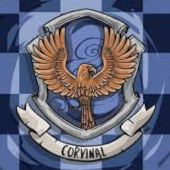

Corvinal
A Corvinal, fundada por Rowena Ravenclaw, uma das bruxas mais sábias da história. Os membros da Corvinal são caracterizados por sua inteligência, criatividade, sabedoria e curiosidade. Eles valorizam o aprendizado, a lógica, a originalidade e a mente aberta. O símbolo da Corvinal é uma águia, que representa a visão e a liberdade, e suas cores são o azul e o bronze, que remetem ao céu e às penas do animal.

Símbolo da Corvinal

Sala Comunal da Corvinal
O fantasma da casa é a Dama Cinzenta. A sala comunal da Corvinal fica em uma torre alta do castelo, e é acessada por uma senha que é na verdade um enigma.
Alguns dos bruxos mais conhecidos da corvinal são: Gilderoy Lockhart, Filio Flitwick, Garric Olivaras, Quirino Quirrel.